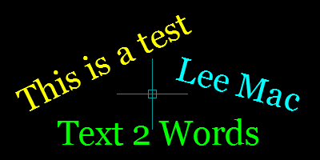

Text to Words
This page is delivered for consistency purposes only, as part of the LeeMac sample module of DynALisp, which shows how DynALisp turns existing AutoLISP programs into a module. The program and its description are the work of Lee Mac, who keeps all the credit for them. The original page, with the latest version, is on Lee Mac's website: https://lee-mac.com/texttowords.html
| Function Syntax | LM-TextToWords – original syntax: t2w (see aliases) |
| Current Version | 1.1 |
| Compatible with AutoCAD for Mac? | Yes |
| Compatible with AutoCAD LT? | Yes |
| Original Page | lee-mac.com/texttowords.html |
Program Description
This program enables the user to convert a selection of single-line text objects into separate text objects for every word in the selection, whilst retaining all properties of the original objects.
The program will perform successfully with single-line text constructed in any UCS and using any justification setting (with the exception of Aligned, Middle or Fit justifications).
Following the conversion, the resulting individual text objects for each word will inherit all properties (including justification) of their respective original text object, as demonstrated by the animation below.
Example of Usage

Bundled program notes
;;-------------------------=={ Text to Words }==------------------------;;
;; ;;
;; Prompts the user for a selection of Text objects and converts each ;;
;; object in the selection into separate Text objects for each word, ;;
;; retaining all properties of the original objects. ;;
;;----------------------------------------------------------------------;;
;; Author: Lee Mac, Copyright © 2013 - www.lee-mac.com ;;
;;----------------------------------------------------------------------;;
;; Version 1.0 - 2013-03-08 ;;
;; ;;
;; - First release. ;;
;;----------------------------------------------------------------------;;
;; Version 1.1 - 2022-03-14 ;;
;; ;;
;; - Program updated to omit extension dictionaries from source text ;;
;; DXF data when creating new text objects. ;;
;;----------------------------------------------------------------------;;
Command Names And Aliases
As in every DynALisp module, each program of this sample module has one main command, named LM-*, and the original command names of Lee Mac's page are kept as its aliases: they run the same command, and can be added, renamed or removed in Dyl-Suite (saved in Resources\Aliases.csv).
| Command | Aliases | Name |
|---|---|---|
| LM-TextToWords | T2W | Text To Words |